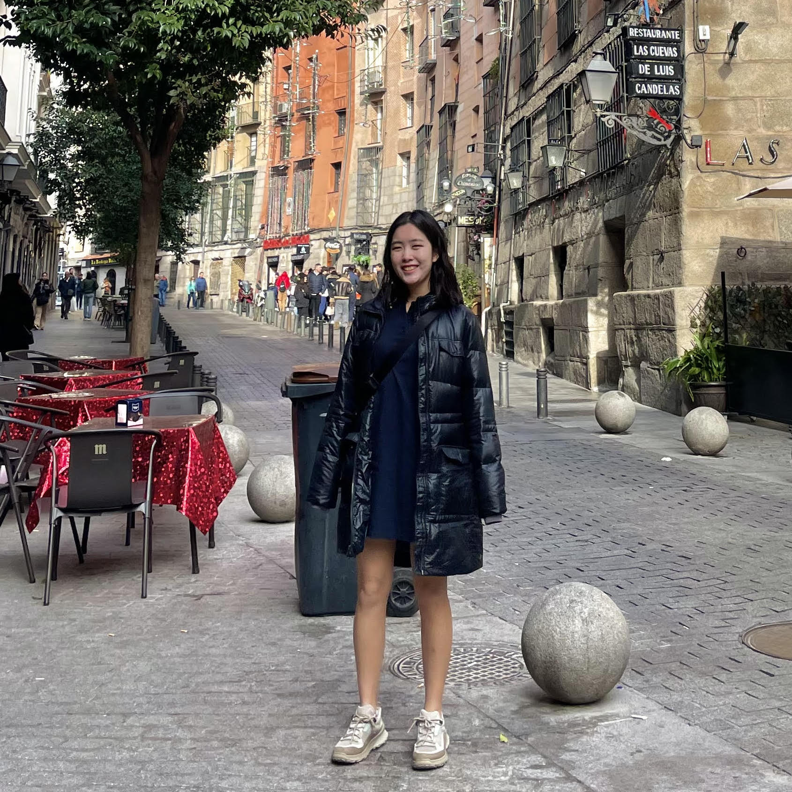

About Me

I am a third-year student at The University of Texas at Austin, double-majoring in in BS Neuroscience and BA Government, with minors in Computer Science, Computational Engineering, Scientific Computation, Applied Statistical Modeling, Philosophy of Law, and Social Sciences. I'm passionate about understanding humanities and sciences through an interdisciplinary approach.
Originally from Seoul, South Korea, I moved to the United States as an international student to pursue higher education. In my free time, I enjoy visiting coffee shops, taking walks, discovering new locales, and reading. Post-graduation, my goal is to pursue graduate studies in biomedical research, with a strong emphasis on computational methods.